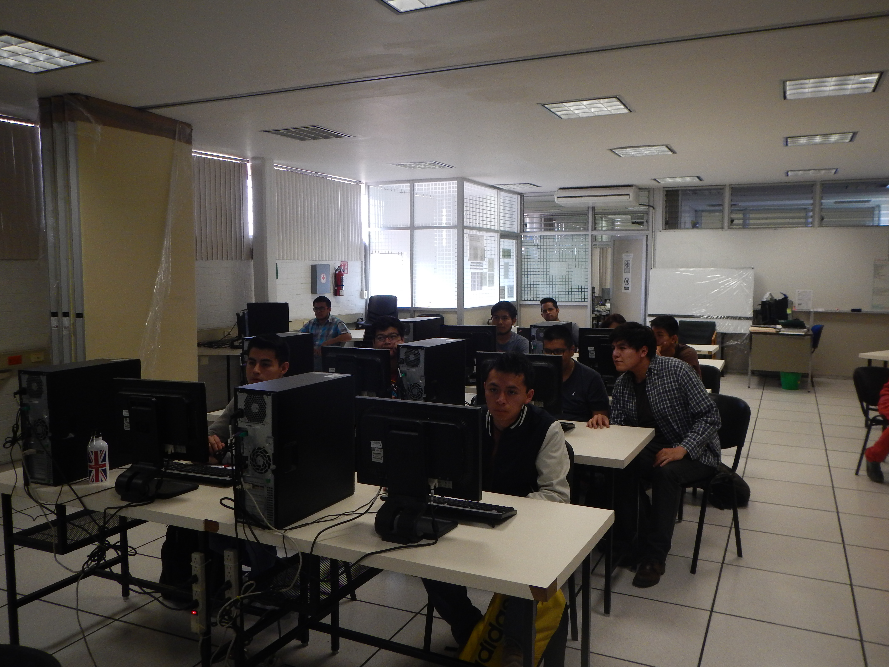
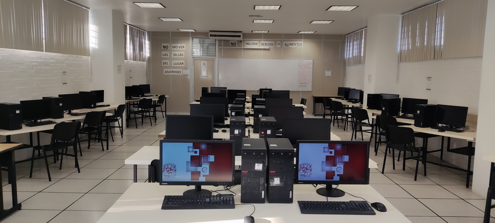

La División de Ingenierías Civil y Geomática tiene como objetivo formar profesionistas que posean una formación multidisciplinaria conformada con excelentes fundamentos en las áreas de Construcción, Estructuras, Hidráulica, Sanitaria y Ambiental, Sistemas y Planeación, Geomática, Geotecnia, Geodesia, Cartografía, Fotogrametría, así como conocimientos y habilidades adicionales que los complementen como computación, comunicación gráfica, informática, administración y evaluación de proyectos, planeación, diseño, organización, operación y conservación de obras civiles, para prestar servicios útiles a la sociedad con alto grado de ética y profesionalismo, logrando asi una competitividad laboral.
Cabús de la Facultad de Ingeniería: En 1873 partió el primer tren de la Estación Buenavista de la Ciudad de México a Veracruz.
Se ubica a un costado del Auditorio javier Barros Sierra, Facultad de Ingeniería

Acciones
El Laboratorio de Geomática y Especialidades de Civil apoya las acciones formativas e iniciativas de la comunidad estudiantil y académica, brinda las siguientes actividades y servicios durante el ciclo escolar e intersemestral:
Impartición de prácticas.
Apoyo en la elaboración de material didáctico.
Apoyo técnico para la realización de prácticas con software especializado.
Apoyo académico a través de asesorías.
Impartición de cursos de actualización de software especializado.
Apoyo técnico para el desarrollo y realización de proyectos de investigación.
Apoyo técnico para la manipulación de hardware-software a los Académicos.
Apoyo a dependencias de la Facultad de Ingeniería para cursos, seminarios y re-inscripciones.
Prácticas
Se imparten prácticas para alumnos de Ingeniería Geomática, para la carrera de Ingeniería Civil y para los alumnos de la División de Ciencias de la Tierra, que cursan las asignaturas de Topografía General, Topografía I, Topografía II, Topografía III, Prácticas Generales, Geodesia, Geomática, Sistema de Coordenadas en Geodesia, Geodesia por Satélite, Sistemas de Información Geográfica I y II, Cartografía, Geomorfología y Percepción Remota I y II.

Proyectos
Se desarrollan investigaciones de proyectos por semestre para los alumnos de la carrera de Ingeniería Civil que cursan asignaturas tales como Análisis Estructural, Diseño Estructural, Hidraulica Urbana, Presupuestación de Obras, Evaluación de Proyectos, Estática Estructural, Hidrología y Estructuras Metálicas, apoyándose con programas especializados de Ingeniería